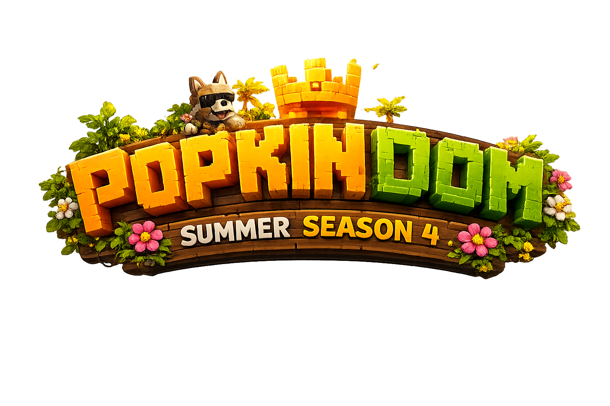

Безопасность
Контроль доступа к аккаунту: автовход, активные сессии и сброс пароля через PIN-код.
Аккаунт—
Сессия сайта48 часов
СтатусАвторизован
Защита PINПроверка…
Автовход в игре—
Если PIN не установлен, задайте его в игре командой администратора аккаунта.